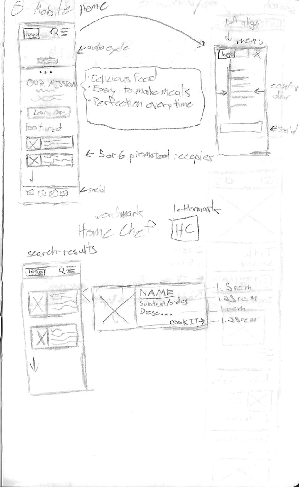
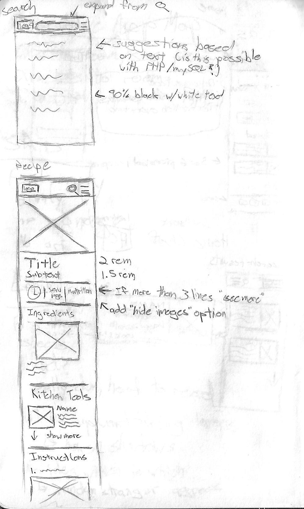

Overview
"Home Chef" is as web application dynamically built on PHP, MySQL, HTML, and CSS with just a touch of JavaScript. I encountered several challenges throughout the project, but along the way was a lot of discovery as to just how powerful and useful PHP can be especially when backed with a MySQL database.
Project Challenge
Students will create a custom web application. The topic will be an online cookbook featuring a library of recipes.
Students will be provided with a library of pre-written recipes in PDF format, as well as a group of images related to each recipe. Each student will create their own branded web application that will display the recipes and provide a user interface for browsing, searching and filtering through all of the available content.
The application must use the following:
- PHP
- MySQL
- HTML
- CSS
Process
The Data
"Home Chef" is all about the data. From its conception, the project focused on how to most effectively layout the data in a way that could be applicable to an infinite number of recipes. Currently, the site is built around forty recipes, but could theoretically be expanded with relative ease.
The Development
Initially constructing the templates in pure HTML allowed for a more rapid development of the skeleton, as it was easier for rapid adjustments that needed to be made. It allowed me to see where my initial sketches fell flat in supporting the data. What I quickly ran into was an issue of balancing images with data, focusing on one over the other would make the entire interface feel incredibly awkward.
Working with this caused me to slim down my initial container ideas and remove the subtitles and recipe descriptions and increase the size of the link buttons. Which makes sense, as on a mobile device the links were not only too small, but were pushed so far down by the excess content that there was a visual disconnect between the image of the meal and the link to start cooking it.
Development Challenges
The largest hurdle to overcome was initializing the MySQL database. Gathering the data was no issue, and conceptually it was easy to plan out how to use that data, it was that middle step that became a challenge. I worked closely with Brianna Buissereth to build the MySQL database which took the better part of seven weeks to perfect. However, once the database was live it was incredible to see our hard work pay off, and with it fully functional the rest of the development went rather smoothly.
The only other issue to crop up showed me the absolute importance to iterate a while loop. On the recipe page not only did the six steps for the recipe magically appear, but so did about four hundred duplicates in waves upon waves that brought FireFox to a grinding halt. Needless to say, i++.
Code Snippets
Recipe card code
from _item.php
Recipe step loop code
from recipe.php
Results
While prior to this project I was aware of the capabilities of PHP, the practicality of it had eluded me. Getting the back end database up and running may be a bit tedious, but the core of the language I now see as almost irreplaceable. Any projects larger than just a couple pages seems almost a waste to use pure HTML even just for the sake of having a global header and footer structure.
Future Development
Moving forward with this project I intend to create a fully functional admin panel to update, add, and delete recipes from the database. This would give me the foundations to create custom content management systems should I ever have the need to do so in the future.